前言
GraalVM号称通用型虚拟机,并能运行多语言,那我们就先来试试这个多语言的特性.
环境
windows:
OS: window10
RAM: 8G
IDE: IntelliJ IDEA 2020.3.2 x64
GraalVM Version: Community Version/21.0.0.2/JDK11linux:
OS: Centos7
RAM: 1G
GraalVM Version: Community Version/21.0.0.2/JDK11
开始
上一节,我们已经运行过java语言,所以这次直接从JS开始.
JS
启动命令行直接输入js即可进入GraalVM提供的js交互环境,输入js代码即可完成交互,和在浏览器中的控制台中进行交互基本没有区别.
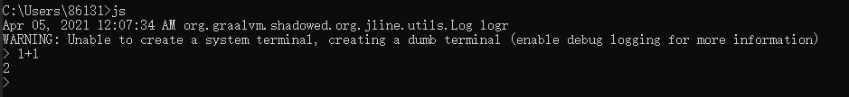
IDE中开发js
项目结构如图
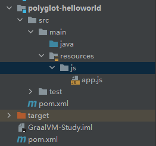
npm init初始化npm环境,注意如果本机安装了别的node环境需要手动切换到<GraalVM>\bin下执行GraalVM自带的node相关命令
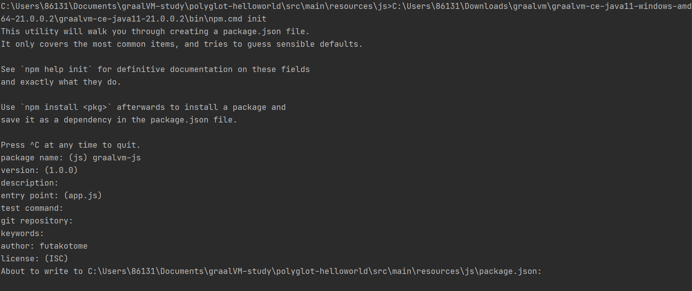
一顿回车后出现package.json文件,和普通的npm命令别无二致
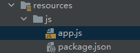
执行官网例子中的npm install colors ansispan命令,同样需要切换到<GraalVM>\bin下执行
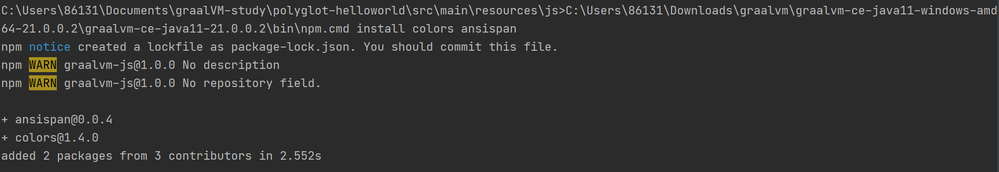
接着运行官网中的示例代码
2
3
4
5
6
7
8
9
10
11
12
13
14
15
const span = require("ansispan");
require("colors");
http.createServer(function (request, response) {
response.writeHead(200, {"Content-Type": "text/html"});
response.end(span("Hello graal.js!".green))
}).listen(8000, function () {
console.log("Graal.js server running at http://127.0.0.1:8000/".red);
})
setTimeout(function () {
console.log("DONE!");
process.exit();
}, 2000);
node app.js运行,注意依然要在<GraalVM>\bin下执行
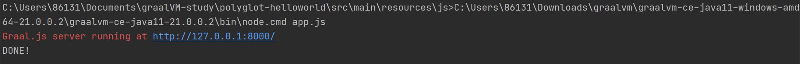
运行成功.
注:以上在java开发环境中开发js并不是必要的,可以在任意一个文件夹下初始化npm环境进行测试和开发,这样只是方便后续的多语言联调时的学习和整理工作
C/C++
目前GraalVM LLVM并不支持windows系统,所以以下皆在linux系统下操作
使用GraalVM的gu(GraalVM updater,可简单理解为npm、pip之类的工具,安装完成后自带)安装llvm-toolchain
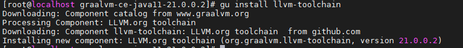
安装完成后输入lli --help检查
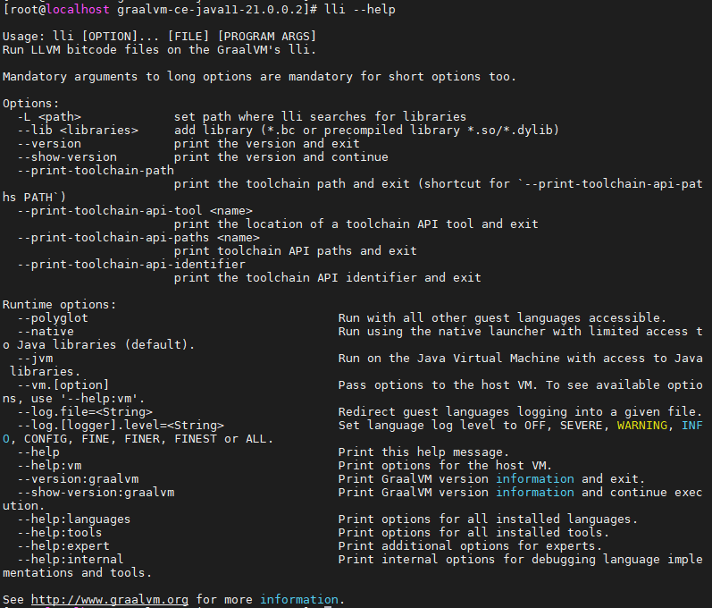
配置llvm-toolchain环境vim /etc/profile在末尾加入
2
3
4
5
LLVM_TOOLCHAIN=$(lli --print-toolchain-path)
PATH=$PATH:$LLVM_TOOLCHAIN
export PATH LLVM_TOOLCHAIN
记得刷新 source /etc/profile
测试,如clang clang --help
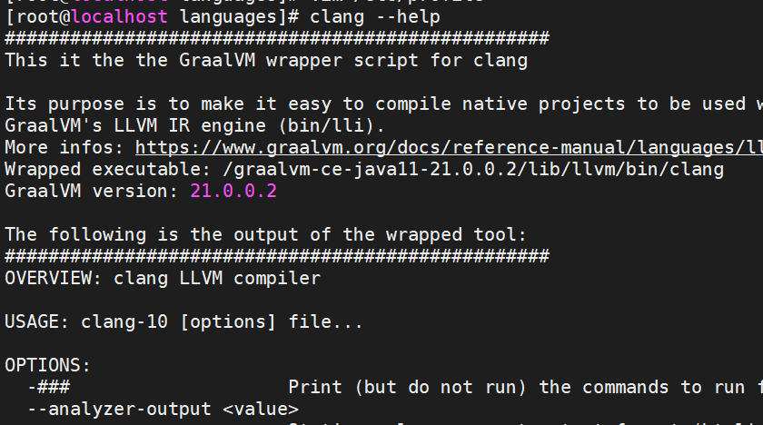
可以看到注释中明确指出这是GraalVM包装的clang指令
新建hello.c文件编写C代码并保存
2
3
4
5
6
7
int main(){
printf("Hello from GraalVM!\n");
return 0;
}
编译出可执行文件clang hello.c -o helloc
执行lli helloc 或 ./helloc均可(当然,肯定建议用lli)
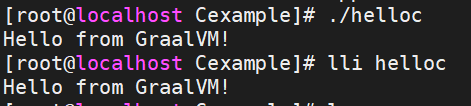
类似的,新建hello-c++.cpp文件编写c++代码并保存
2
3
4
5
6
int main(){
std::cout<<"Hello,C++ world!"<<std::endl;
}
编译可执行文件clang++ hello-c++.cpp -o hellocpp
执行lli hellocpp
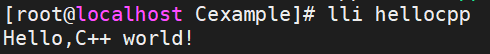
注意尽量不要使用./hellocpp否则会报错缺少动态链接库
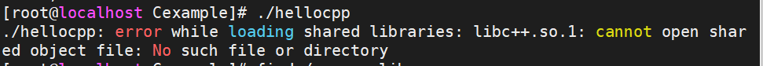
但其实这个链接库是存在的,搜索一下就会发现它在GraalVM的目录里
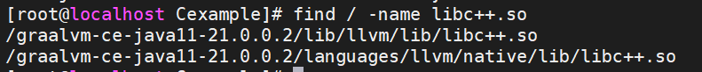
所以还是一律建议用lli来运行
小结
目前仅尝试了Java、JS、和C/C++这几个常用语言,当然GraalVM还支持R、ruby、python等语言,但目前仍处于实验阶段,日后有机会再尝试和记录